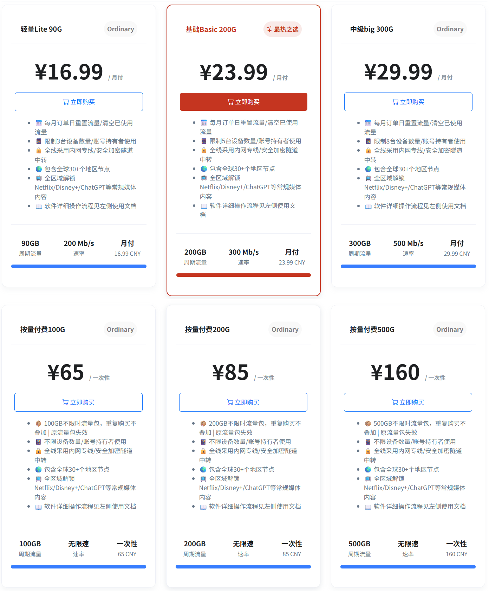

🕓2024年7月20日
测速视频：▶https://youtu.be/or0hXhXX_gU
NiceCloud 中文名耐思云，是稳定好用便宜的优质SS/SSR机场，也是入口数量极多的大带宽高速机场梯子。目前，NiceCloud在全球超过38条优质线路，其节点涵盖美国，香港，台湾，日本，韩国，新加坡，马来西亚，泰国，德国，英国，荷兰，俄罗斯，土耳其，法国等，并根据使用偏好热门地区不断增加中。完美支持ChatGPT与Tiktok、Netflix、Disney、HULU、HBO、TVB、动画疯等国外流媒体视频，能够很好地满足大多数场景的应用落地和用户需求，是性价比很高的翻墙梯子 。
Nice Cloud机场特点

Nice Cloud机场测速(晚高峰油管4K)